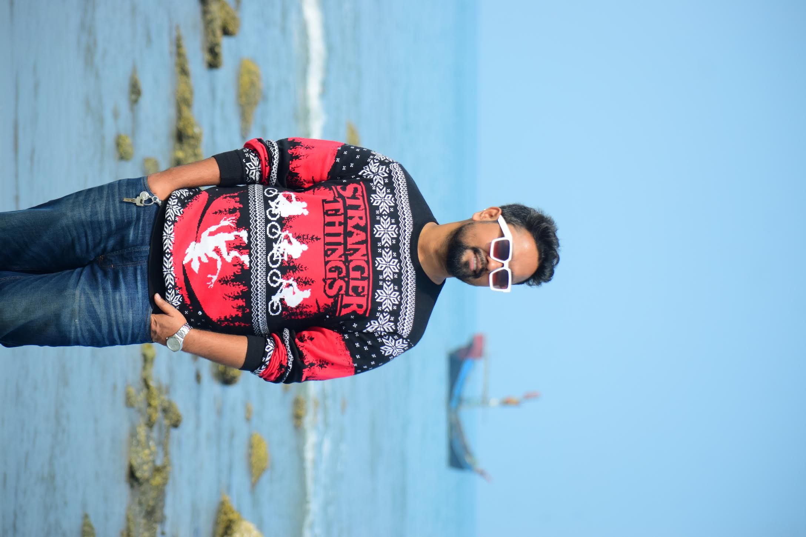
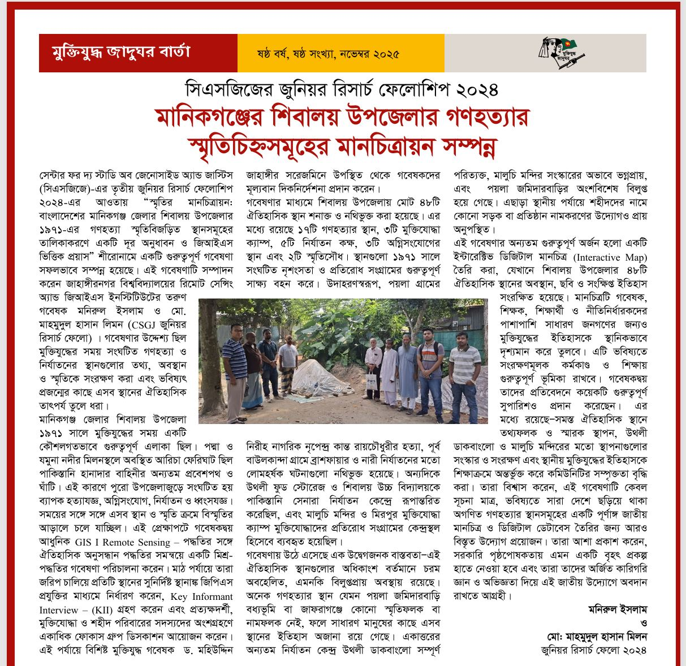

I combine satellite imagery, machine learning and drone fieldwork to map how environmental hazards reach vulnerable communities in Bangladesh and South Asia. Currently open to funded PhD positions in earth observation, GeoAI and hydrology.
Earth observation, machine learning and field science applied to flood risk, water quality and climate vulnerability in data-scarce regions.

From Dhaka rooftop weather stations to satellite river monitoring — a sample of current and recent work.

Research, field deployment and consulting across academia and applied geospatial work in Bangladesh.
One peer-reviewed article, one conference paper and three manuscripts in preparation.
Built through thesis research and active field deployment — not just listed, but used.
I am actively seeking funded PhD positions in remote sensing, GeoAI, hydrology and environmental monitoring. Open to research collaborations and grant partnerships.